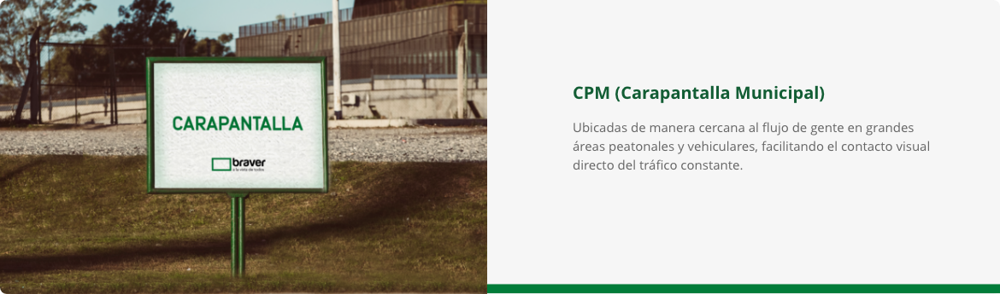
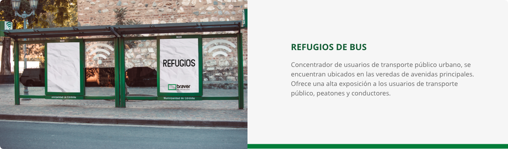

Las carteleras es el medio ideal para replicar mensajes masivamente y generar recordación de campañas de corto y mediano plazo.
Las pantallas municipales de la ciudad integran el paisaje urbano desde mediados del siglo pasado, convirtiéndose en el presente en un ícono indiscutido de la comunicación.
A lo largo del tiempo, su diseño tuvo algunas modificaciones que no alteraron la esencia de su estética.


Los refugios de bus se ubican en veredas y calles peatonales con alto nivel de tránsito vehicular y flujo de personas son elementos de mobiliario urbano, como chupetes, paletas y refugios, son ideales para generar recordación de campañas.